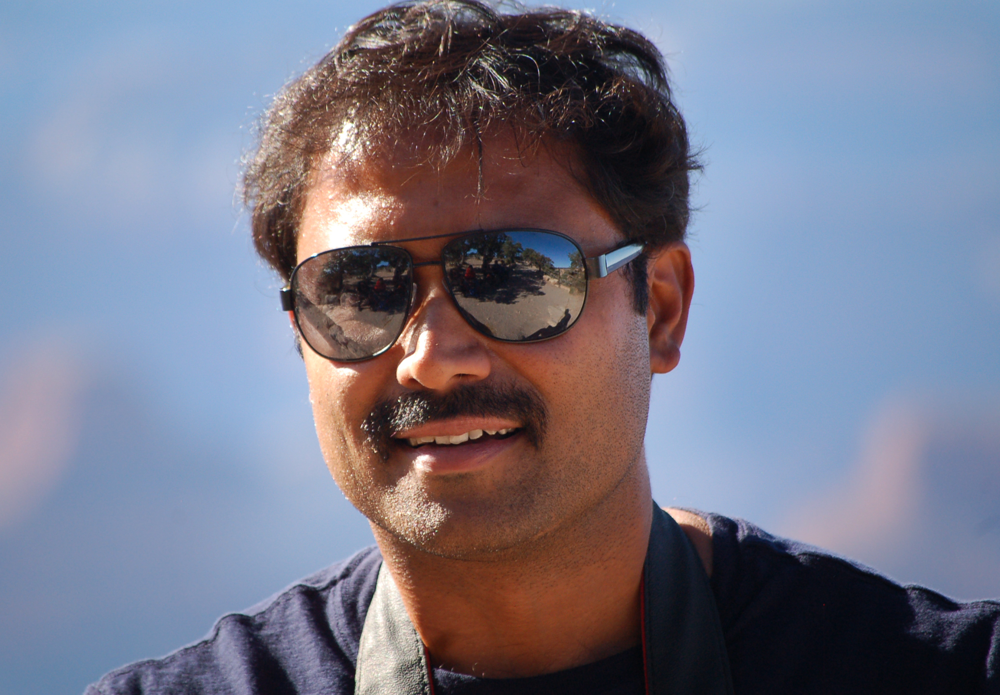

About Me
My pursuit of happiness is glorified every day by my 2 teenage boys, my loving wife and our adorable Dog, so it’s more about them than me that makes the details about me.
I was born and raised in Chennai, an urban city in South most part of India. My mom was a school teacher and my Dad worked at law enforcement department, so time management and disipline were made a habit. Growing up under their cozy shelter and guidance, myself and my younger brother did all the adventures of learning. I completed my Bachelors and Master’s degree in computer science from India. Before embarking into the journey of a professional life, during my college days I was lucky to get some freelance software development opportunity where I was designing accounting applications using Foxpro and Visual Basic. This helped me to test the waters in software technologies and helped me to build a good foundation in designing business applications and also helped supplement some tuitions to my college. Met my beautiful wife and now married for 17 years as of this writing. We travelled, lived and worked in many countries for some years, before we pursued our American dreams.
Now settled in the beautiful city of Los Angeles, I work as a product manager at a technology company and head an excellent team that develop Medicare management software products for Healthcare companies. I am a firm believer in team work and collaboration, so I enjoy learning and mentoring my team, without whom I believe my organization cannot deliver quality products. Every day is a new learning so I am never afraid to make mistakes and have always given my team the full freedom to experiment new ideas. While I pass the credit to them for success, I always step in and assume responsibilities for any failures, which in my opinion is yet another learning.
I manage my time well and during my free time I enjoy variety of activities like exercising, weekend hiking on the hills. Gardening is my passion and I believe in growing our own food. I built a green house in our backyard and around the year we have constant supply of organically grown greens and veggies from our backyard. I am a self-taught Woodworker and Photographer. I love woodworking tools and have setup a woodworking shop in my garage. I have designed and made kitchen cabinets, study desks, coffee tables and side tables for our home use and for friends. I own a full frame camera and lens kits and enjoy shooting landscape and portrait photos and possess good working knowledge of Adobe Photoshop. When I am not doing the above, I enjoy playing social league cricket.